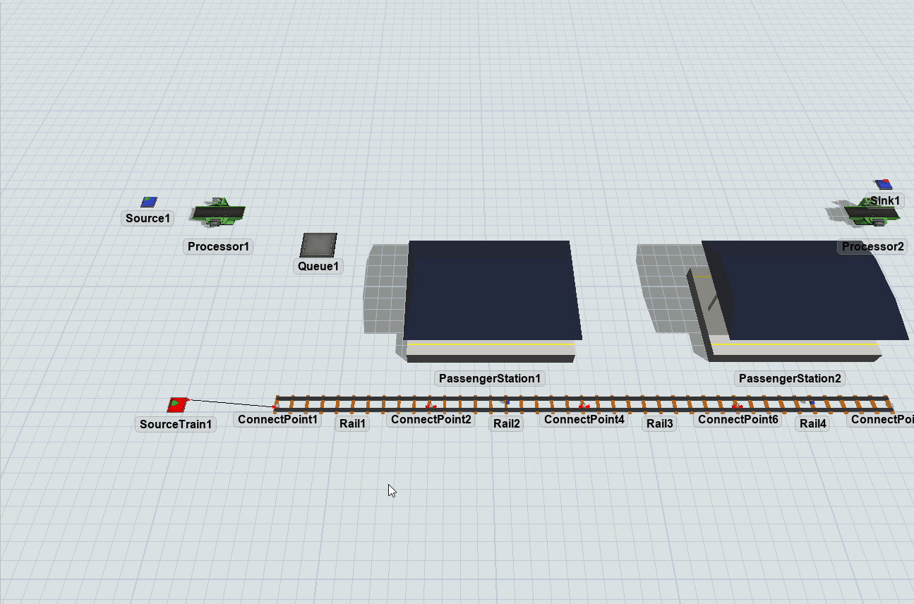
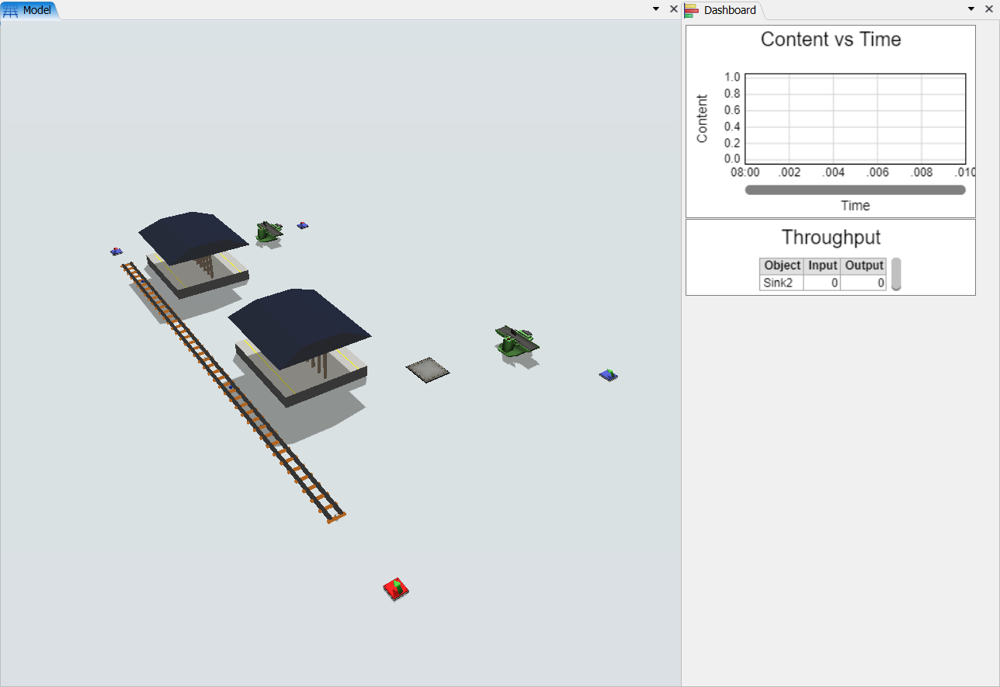
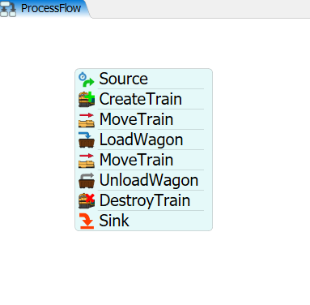

Exercise Information
A station receives a passenger every 10 seconds. This passenger checks
in for 10 seconds and waits in line to get on the next subway. The
subway arrives every 1000 seconds, wait for 60 seconds at the station
and has a capacity of 40 passengers per trip. The destination is 1 kilometer
away and, when passengers arrive, they have to check out, which lasts 10 seconds.
The Stations have a capacity of 40 passengers and is interesting to know the number
of passengers waiting outside de initial station, as well as the number
of passengers that arrived at the destination.
Step 1 Creating objects
In order to achieve the solution for the problem, you should create the
following objects:
- Create one SourceTrain.
- Create four Rails.
-
Connect SourceTrain to the Rail1 (using the A key) and then connect
Rail1 to Rail2, Rail2 to Rail3 and Rail3 to Rail4 via proximity.
-
On the Rail3, set "Virtual Distance" to true and set the value to 1000,
meaning 1000 meters or 1 kilometer.
-
Create two RailControlPoints and put one on Rail2 and one on Rail4.
The RailControlPoints should change color if they are connected
correctly to the Rails. We recommend the creation of the
RailControlPoints in a empty space and, after that, you can place it on the Rails.
-
Create two Stations using the Passenger Station model and connect the
central port of each one to a RailControlPoint (using the S key).
-
On both Stations, set "Max Weight" to 40, "Units Per FlowItem" to 1 and
"FlowItem Class" to Man.
-
Create one Queue and connect it to the Station on Rail2 (using the A key). On
Statistics, in the properties menu, pin the Content > Line Chart on a New
Dashboard to know the number of passengers waiting outside the initial
station.
- Create one Processor and connect it to the Queue (using the A key).
-
Create one Source and connect it to the Processor (using the A key), set its
"Inter-Arrivaltime" to 10 and the "FlowItem Class" to Man.
- Create one Processor and connect the Station on Rail4 to it (using the A key).
-
Create a Sink and connect the final Processor to it (using the A key). On Statistics, in
the properties menu, pin the "Throughput" on the Dashboard already
created to know the total number of passengers that arrived.
- Create a Sink and put it next to Rail4, no need to connect it.

Your model should be looking like this.

Step 2 Processflow Configuration
In order to achieve the solution for the problem, you should create the
following processflow tasks:
- Create a Inter-Arrival Source.
- Create a "CreateTrain" activity.
- Create a "MoveTrain" activity.
- Create a "LoadWagon" activity.
- Create a "MoveTrain" activity.
- Create a "UnloadWagon" activity.
- Create a "DestroyTrain" activity.
- Create a Sink.
Your processflow should be looking like this:

To configure your processflow tasks follow the steps:
- On Source, set the "Inter-Arrivaltime" to 1000.
-
On "CreateTrain" activity, points the "Source Train" reference to your SourceTrain.
Set "Max Weight" to 40 and the "Locomotive Type" to Passenger.
-
On "MoveTrain" activity, set train reference to "token.train" and destiny to the
RailControlPoint on Rail2.
-
On "LoadWagon" activity, set train reference to "token.train", "Control Point"
reference to the RailControlPoint on Rail2 and "Load Type" to "Load Time Constraint".
-
On the second "MoveTrain" activity, set train reference to "token.train" and destiny to
the RailControlPoint on Rail4.
-
On "UnloadWagon" activity, set train reference to "token.train" and "Control Point"
reference to the RailControlPoint on Rail4.
-
On "DestroyTrain" activity, set train reference to "token.train" and "Sink" reference
to the Sink next to Rail4.
With this configuration your model is ready.